Home boarding
Your pet stays with us in a home environment — never in a cage or kennel.
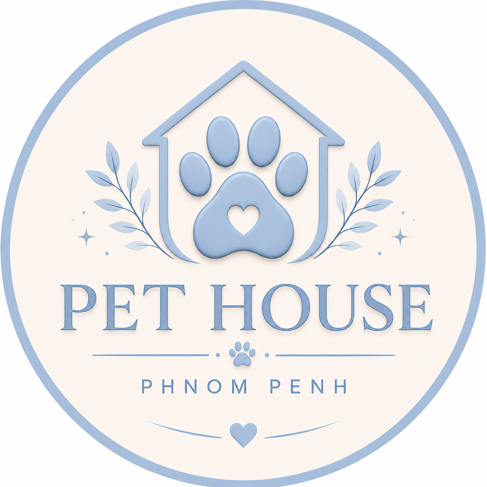
Pet HouseHome boarding & care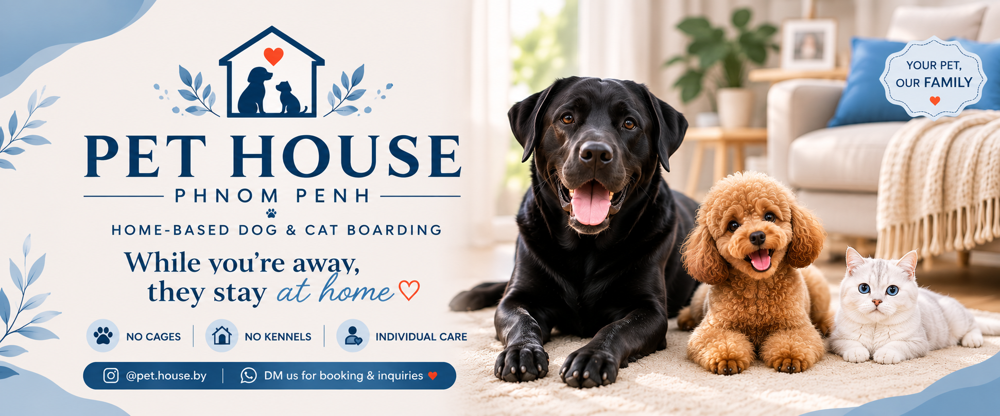
HOME-BASED PET BOARDING
No cages or kennels — just a real home, individual care and regular photo & video updates.
SERVICES
We keep routines familiar, days calm and owners informed.
Your pet stays with us in a home environment — never in a cage or kennel.
Regular dog walks, play, feeding and rest based on your pet's normal schedule.
Medication or supplements can be given according to your instructions. Vet transport can be arranged if needed.
A REAL HOME, NOT A KENNEL
Pets stay with us in our air-conditioned home and are treated as part of the household. We are home most of the time, so they receive plenty of company, attention and individual care throughout the day.
We try to keep feeding, rest, play and walking routines as familiar as possible so each guest can settle in comfortably.
OUR RECENT GUESTS
A few of the lovely pets who recently called Pet House their home away from home.
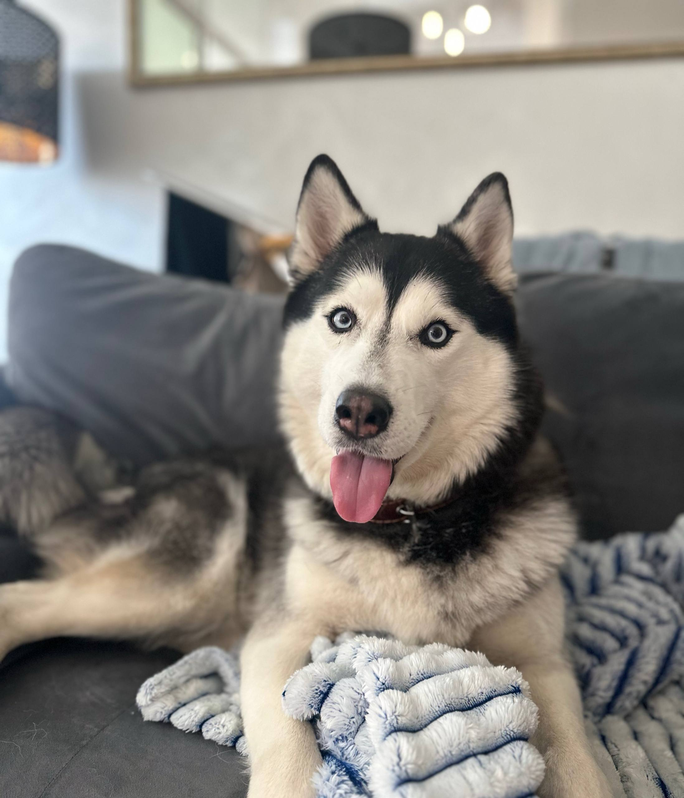
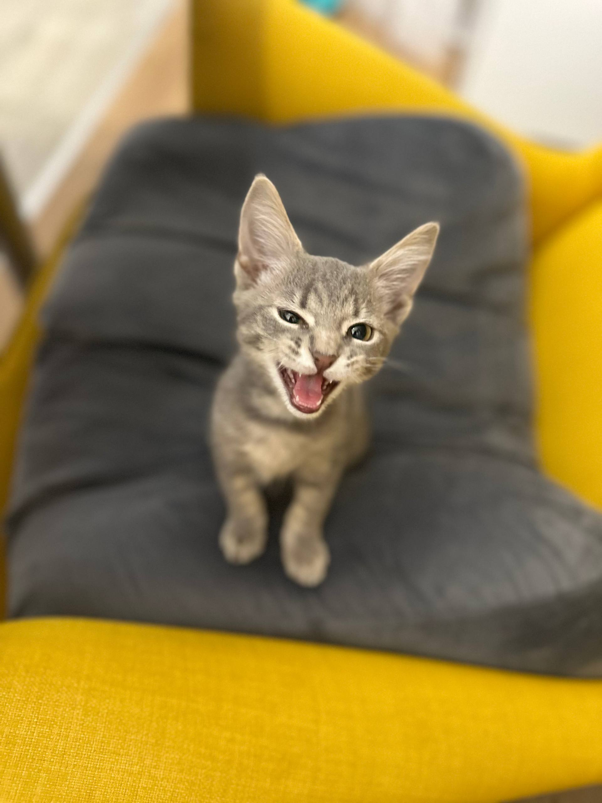
.jpg)
.jpg)
.jpg)
.jpg)
.jpg)
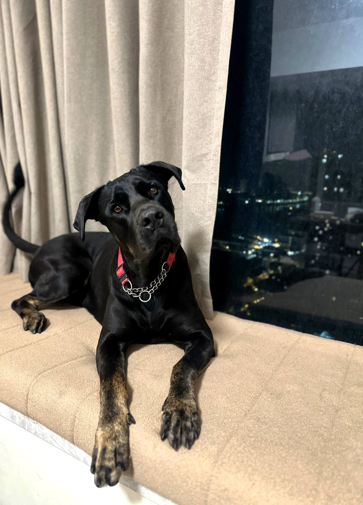
DOG PARK & DAILY WALKS
We have access to a dog park right on the property, giving our dog guests a comfortable place for regular walks, movement and outdoor time throughout their stay.
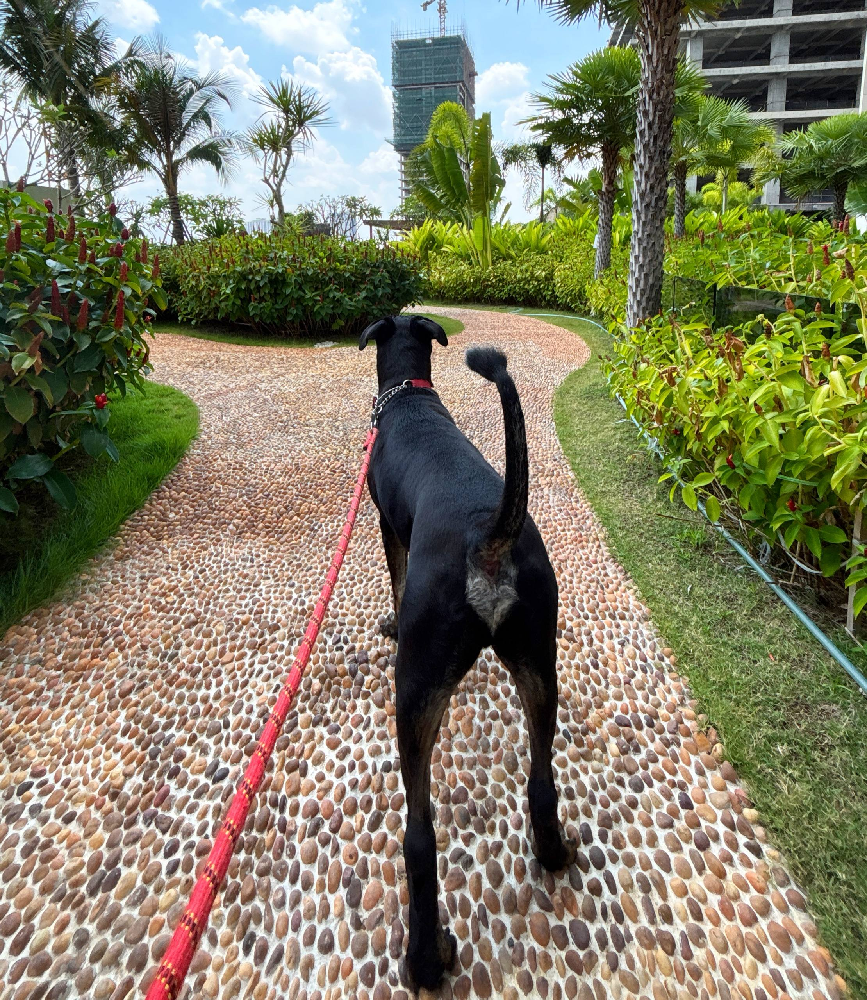
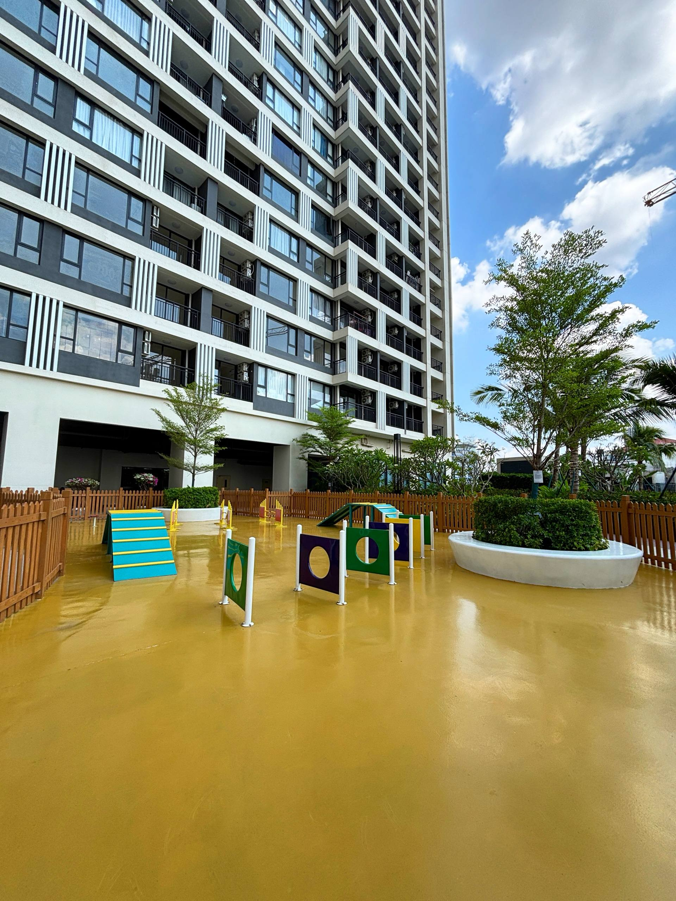
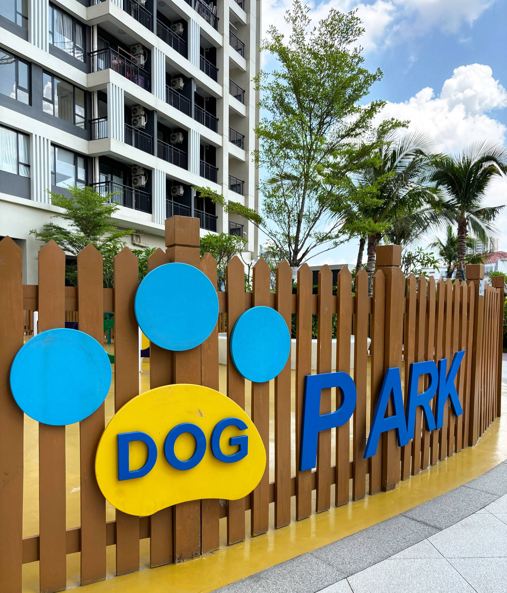
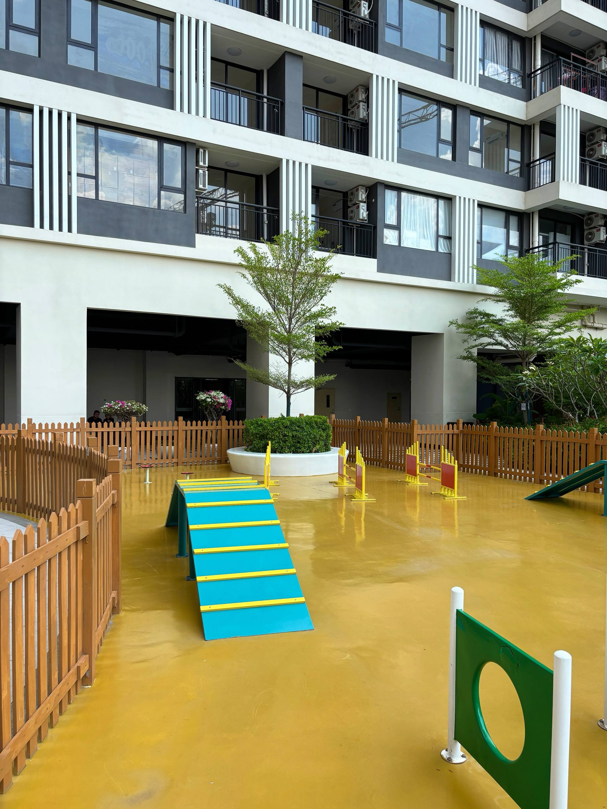
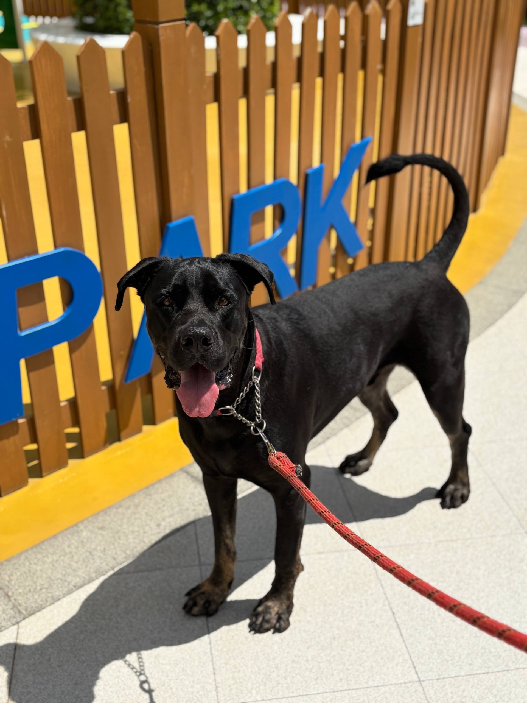
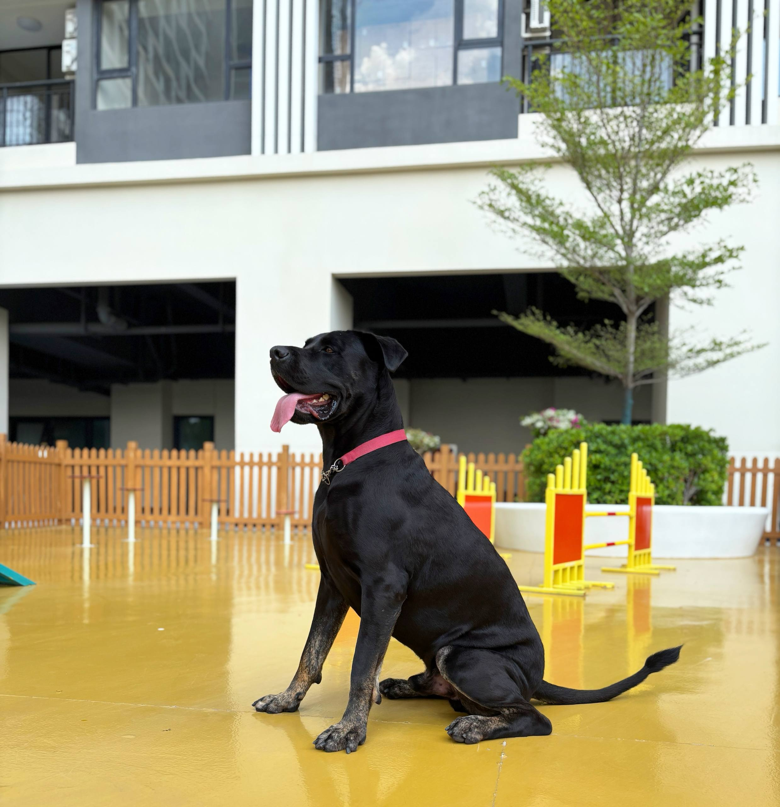
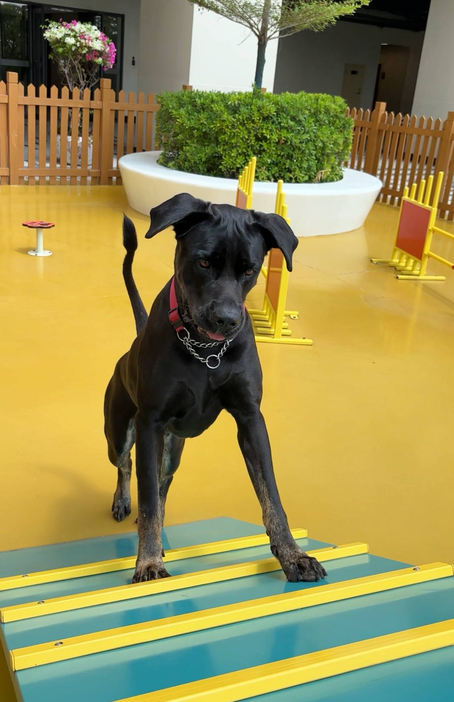
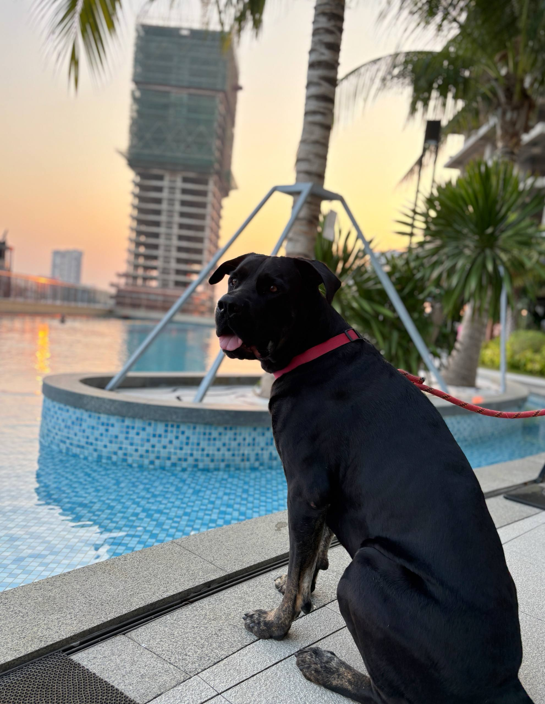
OUR APPROACH
Every animal has a different personality. Some want to play all day, some need quiet space, and some simply want to stay close to a person. We adapt the stay to them.
Home boarding means more personal attention and a calmer atmosphere than a traditional kennel.
EXPERIENCE WITH DIFFERENT PETS
We have experience caring for dogs and cats of different ages and personalities, including puppies, kittens, senior pets and shy, anxious or nervous animals.
Extra attention, frequent routines and patient supervision for younger pets.
A calmer pace and care adapted to their usual routine and comfort.
We give nervous guests time, space and a gentle approach while they settle in.
Feeding, walks, rest and attention are adjusted around what your pet is used to.
HOW IT WORKS
Send dates, age, temperament, feeding routine and anything important we should know.
You are welcome to visit us beforehand, meet us and see where your pet will be staying. A trial day can also be arranged before a longer stay.
We take care of the routine and send you regular photo and video updates.
BEFORE THE STAY
When you contact us, tell us about your pet’s age, temperament, usual routine, food and any medication or special care needs.
BEYOND PHNOM PENH
Owners from Siem Reap, Sihanoukville, Kampot and other areas of Cambodia are welcome to contact us. Depending on the dates and circumstances, we may be able to arrange pickup or travel to your city to collect your pet.
PEACE OF MIND
“The goal is simple: you should be able to travel knowing your pet is safe, comfortable and genuinely cared for.”
— Pet House
PET HOUSE IN CAMBODIA
Pet House offers calm, home-based pet sitting and home boarding for dogs and cats in Phnom Penh. Our dog boarding and cat boarding stays are a welcoming alternative to a traditional pet hotel: every guest lives in a real home, receives individual care and regular photo updates.
Для русскоязычных владельцев мы предлагаем передержку собак в Пномпене, передержку котов в Пномпене и домашнюю передержку животных в Камбодже. Если вам нужен догситтер в Пномпене или петситтер в Камбодже, расскажите нам о привычках вашего питомца — мы подберём спокойный и заботливый формат проживания.
FAQ
No. Pet House is home-based boarding. Guests live with us in a normal home environment.
Yes. We send regular photos and videos so you can see how your pet is doing.
Yes, when it can be safely given according to clear owner or veterinary instructions. Tell us the details before booking.
Yes. You are welcome to meet us beforehand and see where your pet will be staying.
Yes. We accept dogs and cats, subject to availability and whether the stay is a good fit for the animals currently in our care.
We are currently based in Phnom Penh, Cambodia. Pickup and drop-off around Phnom Penh may be arranged, and owners from other Cambodian cities are welcome to contact us about possible transport.
BOOKING
Tell us about your pet and your dates. Pricing depends on the pet, length of stay and individual care required.
Include your pet’s type, age, dates, temperament, food routine and any medication or special care needs.
Message on Instagram@pet.house.by
FOLLOW PET HOUSE
We’re on social media
See more of our guests, daily life, walks, photos and video updates.